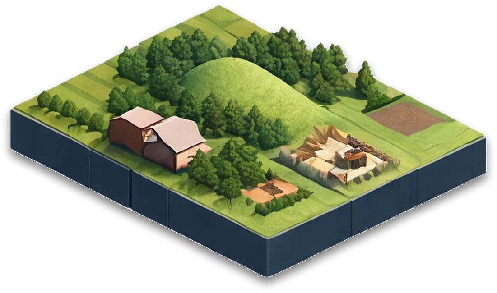
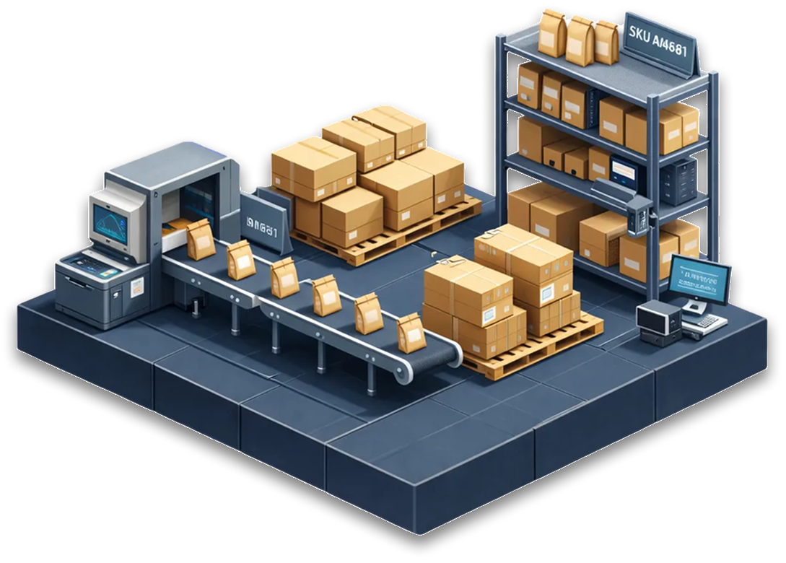
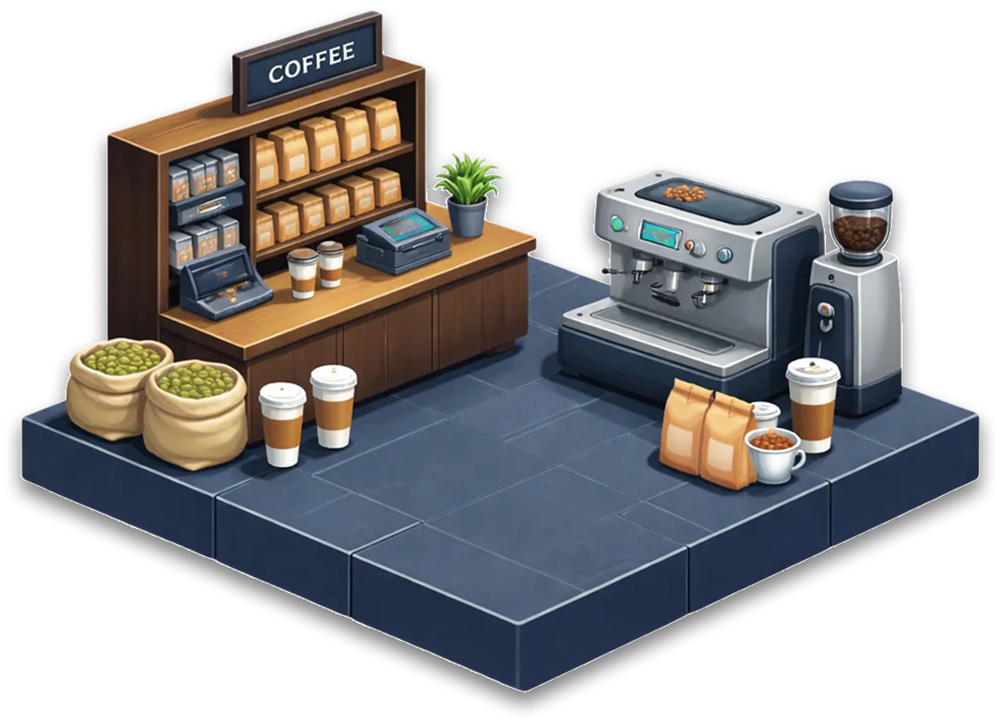

Coffee Product Lifecycle
Trace the journey of coffee from origin to cup, tracking quality and
traceability data of every stage of production



Coffee Product Lifecycle
Explore each stage and view its traceability details
6 stages
•
Traceability enabled
Origin & Harvest
Processing
Export & Logistics
Roasting
Packaging
Retail & Brew
6 stages
Trace
Coffee Product Lifecycle
Explore each stage and view its traceability details
Step 01 / 06
Origin & Harvest
Farm, picking, initial sorting
What happens
—
Key specs
—
Status
—